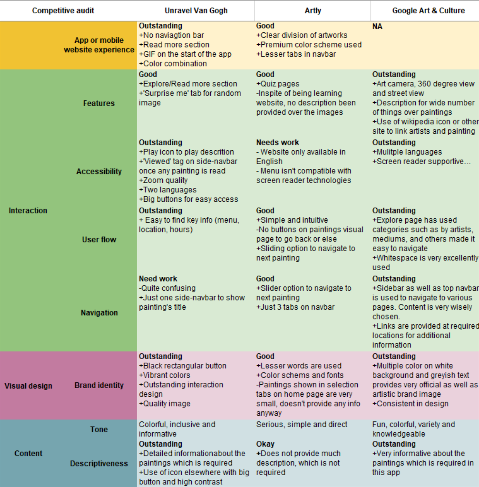

UX Researcher, Interaction Designer
Adobe XD, Figma
June 2022
01
Overview
-ART FOR ALL-
Art&Kart is an mobile app design which provides art-lovers and artists a common platform to buy and sell paintings. The idea is to bring artists and art galleries from around the world to do business with the interested buyers and making it engaging at the same time. From traditional to digital artists, everyone can post their ideas and also follow their inspirations.
02
Understanding
2.1 User Personas


2.2 User Journey Map

2.3 Competitive Audit

Initial Understanding
From initial research, 3 primary conclusions can be drawn:
1. World has developed incredibly towards design field and so the number of people interested in arts (from graphics design, gaming, fashion design to interior design and designing modern infrastructure). On the other hand, technological aid is required to spread the arts from various genre and culture across the globe.
2. It is been a problem for art-lovers to explore arts even of their community due to various reasons such as busy urban lifestyle, no common platform to know about any art related event nearby, long traveling and others.
3. Lastly, there are several platforms that engage people to experience arts virtually, but there's no option to buy any and vice-versa.
03
Design Process
3.1 Story Board


3.2 Information Architecture

3.3 Wire-frame and Lo-Fi prototype


Challenges Coverage
How to distinguish the e-commerce part of the app with networking part?
To have a clear picture of the app's information architecture in the user mind, it was important to differentiate the e-commerce with networking segment. But at the same time, it has to be kept in mind that the artists should have opportunity to sell the arts using networking area too.
How much information would be enough to keep the balance between just-to-know (buyers) from want-to-know (professionals) users?
In apps like 'Unravel Van Gogh', the primary focus is to present arts in all its glory. But here the requirements are conflicting for the two end of users, buyers and professionals. This is resolved by separating the information according to the flow, i.e., users on purchasing page would have information related to product and vice-versa.
What should be the major categories over which arts has to divided?
There are multiple categories which I found on Google Art & Culture site, over which arts (paintings) can be segments such as on theme, medium, time, color, artists, etc. But which segment would be best for marketing purpose.
04
Prototype
-HOME PAGE: FOR BUYERS-
Since e-commerce is the primary goal of the app, complete home-page is designed to explore different categories of paintings on the basis of theme, collections, medium and others. Digital art is also an emerging market and special marketing strategies would be applied to that. However, some of the users might be interested in original paintings, and there's an option for that also. Users can navigate through the page easily using the shortcut button at the top of the page. Sharing option is also provided to the users.
-ORDERING PROCESS-
Ordering process is the core process for the app and therefore usability testing has been performed for this part before prototyping. Add to cart overlay and page (both, for non-interrupted flow), multiple payment option, address changing option and review & confirmation page after purchasing have been included after that.
-ARTSTATION: FOR ARTISTS-
Artstation is designed to inspire artists, people in design fields and even non-artist users. To engage them, users and communities are allowed to post, drop stories, follow their favorite artists and community, organize live sessions and also get notification for any live events in which user might be interested in. Users can even subscribe to sell products through this networking page.
-USER'S PROFILE PAGE-
Only 3 buttons at bottom-navbar are provided at home-page: Home, artstation and profile. So the information or settings not covered under home and artstation must be provided at profile page. So other than user profile description, users can also see their posts and arts on shop. Setting provided in this page include all major settings for this app especially to buying and selling business.
-Design Decisions-
05
Reflection
-ART FOR ALL-
Usability metrics like learnability, effectiveness and insightfulness has been tested on users and received positive reviews. Been my first project, there was a lot to learn taking from understanding users problem, ideating solutions, iterating over design decisions to documenting all these, of course.
1. Goal driven designs: Whole project is based on creating interaction among artists and buyers, and so is the design. Improvements in this app will be made as I receive more reviews on it.
2. Culture and modernity: Originally the idea was to encourage the local (and traditional) artists to do business with interested buyers worldwide. The artstation is there to make there arts and ideas to large group of people.
3. Art inspiration: My encounter with targeted users during initial research were students from art background and there need was to get inspire, follow the artists work and attend events. This app is designed to fulfill all that.